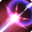
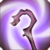

01 · 操作骨架
賢者的攻擊、維持治療與資源循環彼此相連。先把心關指定給需要維持治療的人，持續使用有效攻擊；再用免費能力與蛇膽補足缺口，必要時才回到治療魔法。
平常單體

注藥均衡切換 DoT，之後回主攻擊；心關隨有效攻擊工作
2+ 群怪
安全靠近怪群，攻擊也觸發心關維持治療
蛇膽用途
直接單補或傷害前減傷，依需求選擇；各花 1 蛇膽並回 MP
心關先放坦克 → 單體均衡注藥＋注藥／2+ 目標失衡 → 按承傷安排自生、拯救與蛇膽 → 能力不足時使用必要的治療 GCD。
| 情境／工具 | 操作與原因 |
|---|---|
| 心關 | 指定攻擊命中時觸發對關心目標的治療。攻擊是維持治療的一部分，仍須看血量下降速度。 |
| 蛇膽 | Lv.45 起每 20 秒自然生成一層、最多 3 層；靈橡清汁回 HP，堅角清汁減傷，使用後都回 MP。 |
| 均衡 | 把下一個注藥／診斷／預後切換成 DoT／盾版本。想清楚下一招目的再按，不需要額外一套快捷鍵。 |
賢者雖在 Lv.70 解鎖，低同步仍只保留相應等級工具。Lv.50 沒有寄生清汁、白牛清汁、根素、箭毒或蛇刺量譜，也沒有堅角清汁的 HoT。
02 · Lv.50·技能箱
攻擊與心關
均衡與治療魔法
能力治療、蛇膽與位移
復活與職能工具

官方指南主要顯示滿等效果；本堂均衡仍切換注藥、診斷與預後，不使用注藥III、均衡預後II或均衡失衡。
03 · 單體與群體
單體：均衡 DoT，再用注藥與發炎
均衡注藥接近到期時刷新，其餘時間注藥填充。發炎有獨立回充，但仍是占 GCD 的魔法；在距離內、可安全命中且不耽誤必要治療時使用，避免長時間兩次都滿而停止回充。
2+ 目標：失衡填充，發炎看主目標位置
失衡以自己為中心，發炎以選定敵人為中心。坦克停穩後選能覆蓋怪群的目標，站到安全近距離；不為了按發炎衝進危險地板。發炎在回充時，繼續失衡，不站著等亮。
心關觸發看攻擊，不按怪物數量倍增
命中指定攻擊時，對關心目標觸發一次治療；失衡打到多隻怪，不代表每隻各補一次。均衡注藥也不會每次 DoT 跳傷都觸發。持續攻擊能維持治療，但高壓時仍須靈橡清汁、減傷或必要的 GCD 補血。
移動後找回安全位置與目標數，順勢恢復攻擊，讓心關重新工作。
04 · 心關與治療
心關：先確認放在誰身上
迷宮開場通常指定坦克；心關可改指定其他隊員或自己，但切換後要確認目前的關心目標。它是維持治療，不是能自行追上所有大傷害的自動急救。
拯救：要有後續攻擊才會補
拯救提高接下來最多 4 次心關觸發，狀態最多保留 15 秒。適合坦克持續承傷、你也有連續有效攻擊的窗口；按完卻一直跑位或只唱治療，無法兌現心關增幅。大量缺血時先用能立刻救人的工具。
自生：先靠近需要治療的人
自生以自己為中心覆蓋 20m，提供 15 秒持續恢復。先確認站位，不只看冷卻好了沒；離隊友太遠按下去，後來走過去也不會補發給先前漏掉的人。下一波傷害很快時，別只等 HoT 慢慢跳。
| 情境／工具 | 操作與原因 |
|---|---|
| 坦持續承傷、暫時安全 | 心關維持，按實際需要配合拯救與自生；可預先用堅角減傷。 |
| 單人需要立即恢復 | 靈橡清汁是直接能力單補；不夠或沒有蛇膽時用合適的治療魔法。 |
| 即將受傷、需要盾 | 均衡診斷單盾或均衡預後團盾；讓盾在傷害發生前就到位。 |
| 團體已大量掉血 | 自生需要時間；立即缺口可用預後等必要 GCD 治療。本堂還沒有寄生清汁。 |
均衡診斷不是永久盾維護
拉怪途中預先有盾合理，但進戰後如果心關、能力與血線都足夠，盾破就重貼會吃掉攻擊 GCD、心關觸發與 MP。需要直接 HP 時也要分辨診斷與帶盾版本的作用，不把所有掉血都翻譯成「再補盾」。
05 · 蛇膽、減傷與 MP
蛇膽會長回來，不長時間抱滿三層
每 20 秒自然獲得一層，最多 3 層；靈橡清汁與堅角清汁各消耗 1 層，並回復最大 MP 的 7%。有合理治療或減傷價值就用，別把所有層數封存成緊急底牌；同時保留能應付接下來壓力的後手。
Lv.50 堅角清汁沒有 HoT
15 秒、10% 團隊減傷，持續恢復要到 Lv.78 特性才有。適合傷害前安排；它不會直接把殘血坦克補上來，現在急需 HP 時優先考慮靈橡清汁或必要的治療魔法。
MP：醒夢提前轉，檢查治療是否過量
醒夢是持續回 MP，不等乾掉才按。蛇膽技能的 MP 回復也是正常循環的一部分；需要治療時使用靈橡，已知承傷前使用堅角。若長時間抱滿蛇膽，或每個 GCD 都重貼盾，先修正這些習慣。
不要為了單純回 MP，把三顆蛇膽一次耗光而沒有後手；也不把某次低同步的 MP 壓力擴寫成所有場合都最耗魔的職業定論。觀察這場的攻擊、過量治療、復活次數與資源使用。
06 · 移動與事故
均衡是短 GCD 切換，不是免費編織
按均衡會進入短 GCD，下一個切換版本使用後解除。均衡注藥、均衡診斷與均衡預後雖瞬發，仍占用自己的 GCD；移動時先判斷這個 DoT 或盾是否真有需要，不無目的地連續切換。
神翼：目標位置就是落點
可選敵人或隊員快速接近；它不是朝自身前方的自由位移。先看對方腳下、敵人朝向與接下來地板，選到危險位置就不要衝。也別為了回到近距離輸出，離開必要的治療覆蓋。
復甦、復原與其他職能
即刻詠唱搭配復甦能省長詠唱，仍須付 MP 與 GCD；先確保自己與存活隊伍安全。沒有即刻時，找安全窗口再硬唱。復原處理可解除弱化；沉穩詠唱處理可抵抗擊退／吸引與受擊中斷，仍要避招。營救只在目的明確、自己位置安全時使用。
處理事故後檢查心關目標、蛇膽、MP 與敵方目標，安全就重新攻擊。
07 · 常見問題
- 攻擊是不是等於完全不用補？
- 不是。心關提供維持治療；承傷超過它能處理的速度時，用蛇膽、能力或必要治療魔法補缺口。
- 失衡打五隻，心關就補五次嗎？
- 不會。一次攻擊觸發一次心關，並不按命中的怪物數量倍增。
- DoT 每次跳傷都會觸發心關嗎？
- 不會。均衡注藥是施放命中時觸發，後續持續傷害不持續觸發心關。
- 發炎能像能力一樣插在注藥中間嗎？
- 它是魔法且占用 GCD，不能把獨立回充誤讀成 oGCD 能力。
- 堅角清汁怎麼沒有補血？
- 同步 Lv.50 尚無 Lv.78 的 HoT 特性；現在用它預防傷害，用靈橡處理直接 HP 缺口。
- 自生按了有人沒吃到，走過去會補發嗎？
- 不會。先站到需要的人在範圍內，再按；不要用後續移動補救施放當下的漏人。
- 盾破了能拿箭毒嗎？
- 本堂尚無蛇刺與箭毒，不用高等資源循環解釋 Lv.50。
- 拯救按了血條沒有明顯變化，是不是沒效？
- 先看是否有有效攻擊觸發，以及目標是否真的缺血。低承傷時可能過量；把它安排在有持續治療需求的攻擊窗口。
08 · 回場速查
心關確認目標；2+ 目標失衡；自生先看範圍；蛇膽有價值就花；醒夢提早轉。
- 心關：攻擊不中斷，也能辨認何時它不夠，改用真正能補足的工具。
- 站位：失衡與發炎命中怪群，自生覆蓋需要的人；神翼落點先確認安全。
- 資源：蛇膽不長時間卡 3 層，MP 下降時主動醒夢；不要用堅角等 HoT。
正式練習場地
R007／同步 Lv.50／幻龍殘骸密約之塔／劇情輔助器。怪群練心關配合持續失衡、自生範圍與蛇膽使用；單體戰練均衡注藥、發炎距離與走位後復歸。預防傷害與直接回 HP 分開選工具。
09 · 延伸閱讀
本頁依 Git 職業教材與學習記錄所釐清的操作問題重編為公開教學；技能名稱、圖示與同步特性另以繁中官方指南核對。官方頁主要顯示 Lv.100 效果，本堂依 Lv.50 可用工具還原。
- 賢者講義總索引 ↗
查閱此職業目前已開放的正式講義。
- 學者 Lv.50｜仙女、乙太超流與護盾 ↗
對照低同步盾補的維持治療、資源與必要 GCD。
- 繁中官方職業指南 ↗
核對習得等級與特性，不直接把滿等 tooltip 當同步技能。